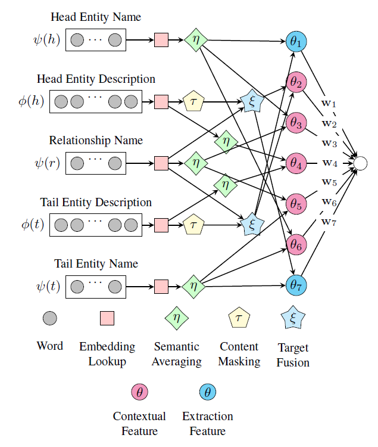
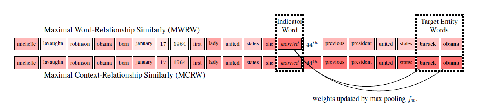
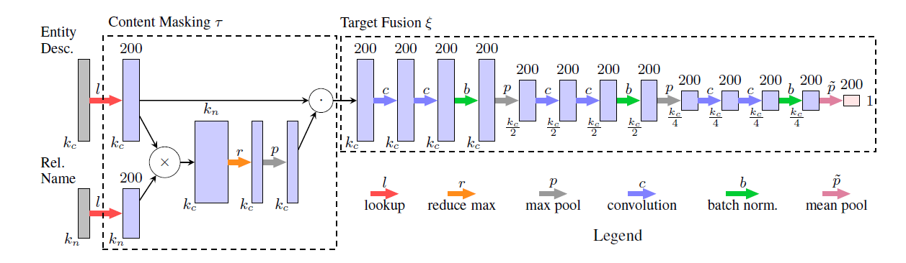

Open-World Knowledge Graph Completion
摘要：[1]文首先讨论了Closed-World KGC，它无法处理从 KG 外部加入的新实体，并严重依赖已有KG连接的，不能对弱连接有好的预测。为此定义了 Open-World KGC，可以接收 新的实体并链接到 KG；并依此提出了ConMask模型，在给定关系和实体名、实体描述的前提下，利用attention机制通过关系定位实体描述中最相关的词，再以这些词和实体得到要链接的实体。
1. Introduction
知识图谱（KG）是一种信息网络，它用三元组 $(h,r,t)$ 来表示知识（h: head entity, t: tail entity, r: relation），目前比较出名的KG有 DBPedia，ConceptNet 等，目前的大多数KG都有噪音且不完整，比如基于Wikipedia的DBPedia有460万个实体，但其中一半实体拥有少于5个的关系。
这说明了大部分的知识图谱仍然是非常不完善的，我们必须从一开始就要考虑系统的修改、补充完善的可能性。这项任务被定义为Knowledge Graph Completion (KGC)。
Closed-World KGC
给定一个不完整的KG $G=(E,R,T)$ 其中 $E,R,T$ 分别表示实体集，关系集以及三元组集，Closed-World KGC的任务就是通过找到一系列丢失的三元组 $ T’ = {
一个很重要的地方在于，Closed-World KGC 假定了新的实体、关系都被原有的 $G$ 包含，对于不在 $G$ 中的实体则一筹莫展。
目前的Closed-World KGC方法很多往往使用TranE或者低维特征表示模型，前者的核心思想就是 $h+r=t$ ，后者则指 Embedding 等。
该方法仅对固定的或者缓慢更新的KG有效，对于快速变更的KG则效果一般。
Open-World KGC
给定一个不完整的KG $G=(E,R,T)$ 其中 $E,R,T$ 分别表示实体集，关系集以及三元组集，Open-World KGC 的任务就是找到 中没有的三元组集，$T’ ={
Closed-World方法就是根据知识图谱的拓扑结构更新一个随机的向量作为实体和关系的embedding，但对于不在网络中的实体，这个方法就失效了，这个时候就需要用别的特征来代替这个用网络拓扑结构得到的特征。
一般直觉就是用实体的描述（entity description），根据实体的描述来得到特征，但从非结构化文本中学习向量表示比在网络的拓扑结构中要难得多，原因如下：
- 在Closed-world KGC模型中，每个实体都有一个embedding (从与它相连的实体上学得的)，但Open-World KGC模型则需要从实体描述的word embedding中得到entity embedding。而无论实体之间的联系情况是什么，word embedding的更新都会导致有相同词的entities的更新。
- 因为使用了非结构化文本，所以Open-World KGC模型可能会引入噪音或者冗余信息。
2. Closed-World KGC
在 Closed-World KGC 中，最为常用也最为基础的方法是一种给予强化学习(RL)的模型，被称为TransE [2]. 它有一个简单实用的假设：
其中h是head entity的向量，t是tail entity的向量，r是关系向量。
TransE定义了loss function：
其中 $T$ 代表一个三元组的集合；$E(
这里还略去了很多TransE的变体等其他模型，但它们都是基于Closed-World KGC来做的。
3. ConMask for Open-World KGC
首先通过一个例子来说明：
任务：填补三元组\
描述：“… Ameen Sayani was introduced to All India Radio, Bombay, by his brother Hamid Sayani. Ameen participated in English programmes there for ten years …” ，
目标预测实体：Bombay (or Mumbai)
为了找到Ameen Sayani的住址，在处理这个任务的过程中，我们不会从头看到尾，而是找到相关的关键词比如家庭或工作相关的词。这里，我们发现Ameen Sayani的工作地点All India Radio在Bombay，因此我们推测Ameen Sayani也住在Bombay（Bombay就是现在的Mumbai）。
这个过程也可以被归纳为：
- 定位与该任务相关的信息。
- 根据上下文和相关文本推断。
- 根据相关文本推出正确目标实体。
仿照这个过程，ConMask的工作方式被设计为：
- Relationship-dependent content masking — 标记那些与任务相关的词语。
- Target fusion — 从相关文本中抽取目标实体的embedding。
- Target entity resolution — 通过计算KG中的候选目标实体，2中抽取出的实体embedding以及其它文本特征之间的相似度来选定目标实体。

ConMask模型总体结构如上，ConMask通过选择与给定关系相关的词来避免引入不相关的和有噪音的词。对于相关的文本，ConMask通过全连接卷积神经网络（FCN）来提取word-embedding。最后它将提取的embedding于KG中存在的实体进行比较，从而获得一系列目标实体。
3.1 Relationship-dependent content masking
ConMask根据给定的关系预处理输入文本，来选择一些相关的小片段，从而屏蔽掉无关文本。content-masking这一灵感来源于基于attention机制的RNN网络[3]，关于attention之前的笔记也有学习过。
基于相似度得到选择最相关的词，具体公式如下：
其中 $e$ 是一个实体，$r$ 是某个关系, $\phi$ 是description function并返回一个向量用于表示对一个实体或关系的描述，$\psi$ 是name mapping function并返回一个向量用于表示一个实体或关系的名字， $W{\phi{(e)}} \in \mathbb{R}^{|\phi(r)|\times k} $ 是一个描述矩阵每一行表示一个k维的描述中的word-embedding， $W{\phi{(e)}} \in \mathbb{R}^{|\phi(r)|\times k} $ 是一个名字矩阵每一行表示一个k维的实体名字word-embedding，$\circ$ 是row-wise product，$f_w$ 用于计算的每一行的屏蔽比重。
作者给了一个简单的$f_w$ ，Maximal Word-Relationship Weights(MWRW)，就是计算实体描述中每个词向量与关系名称的每个词向量的最大cos相似度:
这个公式会给与给定关系无关的词更小的权重，与关系语义接近的词更大的权重，但权重最高的词一般不是目标实体，如下图所示，给定关系spouse，得到最大权重的是married，虽然married与spouse在语义上接近，但它并不是目标实体，因此作者称这种有着最大MWRW权重的词为指示词（indicator word），因为正确的词一般就在该词附近，在下图例子中可以发现目标实体barack obama就在married后面。
为了给目标实体word正确的权重，作者改进了这个公式，具体公式如下，这个公式就是每个词的权重不会小于之前 $k_m$ 称为 Maximal Context-Relationship Weights (MCRW)：

3.2 Target Fusion
这一步骤用于输出基于词的实体embedding，这个过程记为$\xi$，使用Conetent Masking $\tau$ 的输出。它使用全连接卷积网络，其结构如下：

Semantic Averaging
我们可以对所有实体进行embedding，但是这会产生大量的参数，使计算变得非常复杂。事实上，因为Target fusion函数用于抽取，所以对不需要抽取的实体名字使用target fusion就会显得很奇怪也很没有必要。
这里作者提出了一个简单的语义平均法来计算这些实体的embedding：$\eta(W) = \frac{1}{k_l}\sum_i^{k_i}W_i$
3.3 Loss function
为了加速训练，我们参考 list-wise ranking loss function (Shi and Weninger 2017)，并设计 partial list-wise ranking loss function，拥有正负目标采样。正样本就是训练集的标注内容，记为$E^+$；负样本就是替换正样本的head entity或tail entity所得到的，记为$E^-$ 。
$p_c$ 服从$[0,1]$的均匀分布，大于0.5时，把输入实体作为tail entity，小于0.5的时候就是作为head entity，表示替换head entity和tail entity的概率各为50%。另有$S$, 即 softmax normalized output of ConMask：
4. Results
从结果上看，对比其他模型，在开放领域，ConMask获得了最佳的效果；在Closed-World中，尽管ConMask不是为此设计的，但是对比TransE和TransR依然不逊色，结果相仿。
目前而言，ConMask模型只能预测在实体描述中表达的关系，将来还应考虑扩展它，使其能够发现新的或隐含的关系。
Bibliographies
代码实现：https://github.com/bxshi/ConMask
[1] Shi, Baoxu, and Tim Weninger. “Open-World Knowledge Graph Completion.” arXiv preprint arXiv:1711.03438 (2017).
[2] Bordes, A., Usunier, N., Garcia-Duran, A., Weston, J., & Yakhnenko, O. (2013). Translating embeddings for modeling multi-relational data. In Advances in neural information processing systems (pp. 2787-2795).
[3] Chorowski, J. K., Bahdanau, D., Serdyuk, D., Cho, K., & Bengio, Y. (2015). Attention-based models for speech recognition. In Advances in neural information processing systems (pp. 577-585).